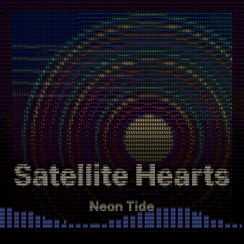
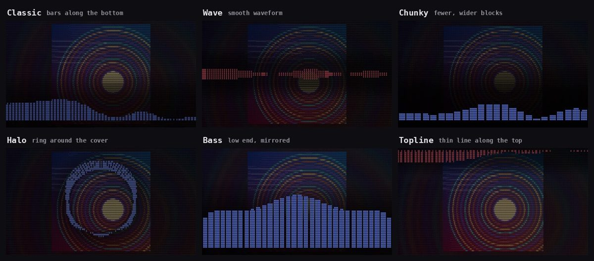

ASCII Music Visualizer
วอลเปเปอร์สำหรับ Wallpaper Engine ที่เปลี่ยนเพลงที่กำลังฟังให้กลายเป็นภาพ ASCII แบบเรียลไทม์ ใช้ WebGL shader วาดปกอัลบั้มเป็นตัวอักษร มีแถบเสียงที่ขยับตามเพลง ปกที่หมุนพลิกดูรายชื่อเพลงได้ และชื่อเพลงที่รองรับภาษาไทย ใครก็สามารถกดติดตามบน Steam Workshop ลองใช้เวอร์ชันเว็บบนเบราว์เซอร์ หรือดูซอร์สโค้ดทั้งหมดบน GitHub
- บทบาท
- ออกแบบ พัฒนา และเผยแพร่
- เครื่องมือ
- JavaScript, WebGL, HTML/CSS, Node.js, Wallpaper Engine
—
ผู้ติดตามบน Steam
—
รายการโปรดบน Steam


 CS50's Introduction to Programming with Python
CS50's Introduction to Programming with Python
 Basic Cybersecurity
Basic Cybersecurity
 อบรมระบบเครือข่ายและสายสัญญาณ
อบรมระบบเครือข่ายและสายสัญญาณ